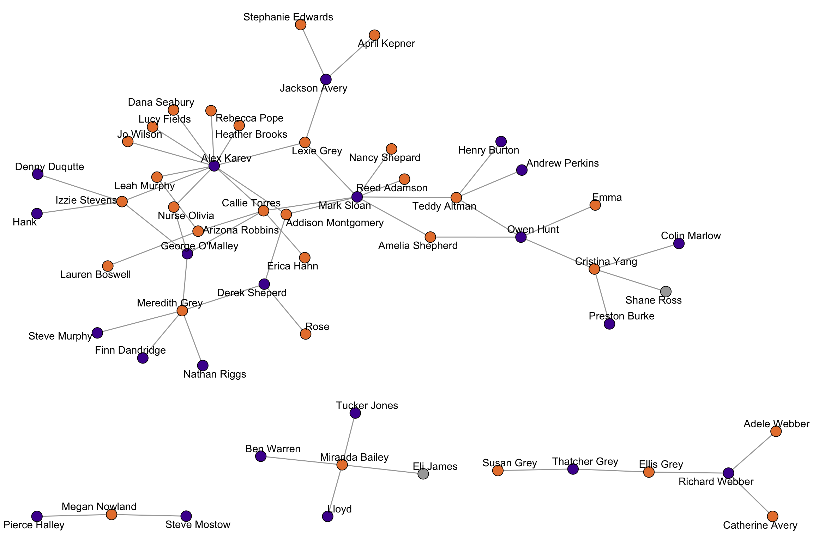
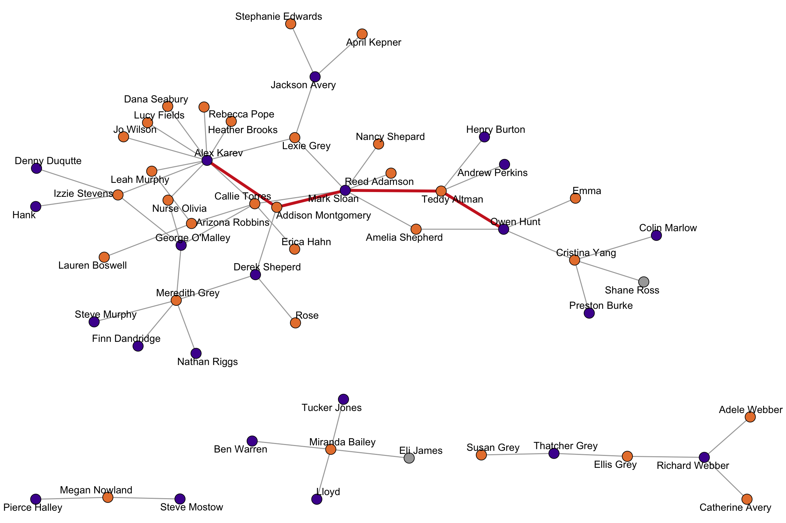
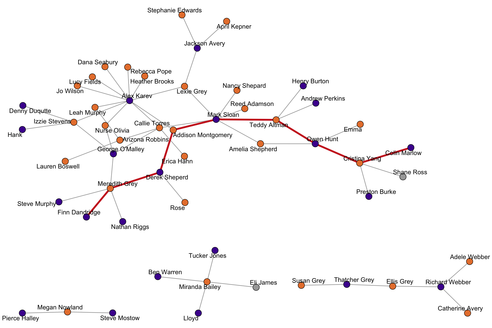
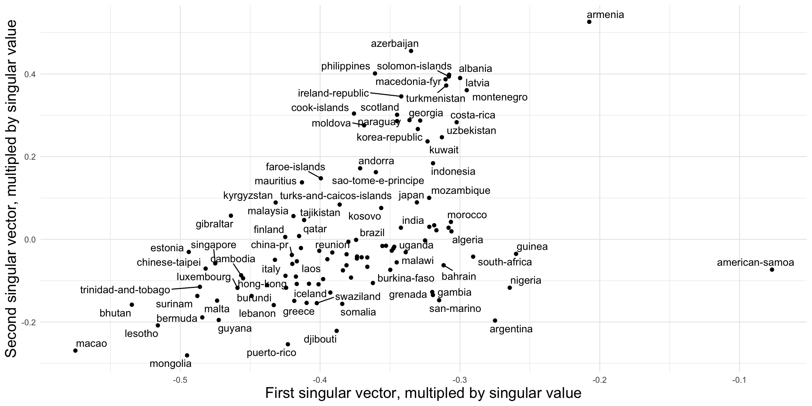

library(igraph)
library(networkdata)2 Basic Network Statistics
2.1 Introduction
2.2 Simple Network Characteristics
In the following, we use a network from the networkdata package to introduce some basic network statistics.
data("greys")
The “greys” network consists of characters from the show “Grey’s Anatomy” and links indicate who hooked up with whom (up to about 2022).
greysIGRAPH f7716f1 UN-- 54 57 --
+ attr: name (v/c), sex (v/c), race (v/c), birthyear (v/n), position
| (v/c), season (v/n), sign (v/c)
+ edges from f7716f1 (vertex names):
[1] Arizona Robbins--Leah Murphy Alex Karev --Leah Murphy
[3] Arizona Robbins--Lauren Boswell Arizona Robbins--Callie Torres
[5] Erica Hahn --Callie Torres Alex Karev --Callie Torres
[7] Mark Sloan --Callie Torres George O'Malley--Callie Torres
[9] Izzie Stevens --George O'Malley Meredith Grey --George O'Malley
[11] Denny Duqutte --Izzie Stevens Izzie Stevens --Alex Karev
[13] Derek Sheperd --Meredith Grey Preston Burke --Cristina Yang
+ ... omitted several edgesThe density of a network is defined as the fraction of the potential edges in a network that are actually present.
c(
edge_density(make_empty_graph(10)),
edge_density(greys),
edge_density(make_full_graph(10))
)[1] 0.00000000 0.03983229 1.00000000The density of an empty network is \(0\) and for the full network it is \(1\). The density of empirical network is somewhere in between but as the number of nodes increases, we’d expect the density to decrease and the network becomes quite sparse.
A shortest path is a path that connects two nodes in a network with a minimal number of edges. The length of a shortest path is called the distance between two nodes.
shortest_paths(greys,from = "Alex Karev",to = "Owen Hunt",output = "vpath")$vpath
$vpath[[1]]
+ 5/54 vertices, named, from f7716f1:
[1] Alex Karev Addison Montgomery Mark Sloan Teddy Altman
[5] Owen Hunt
$epath
NULL
$predecessors
NULL
$inbound_edges
NULL
distances(greys)[1:10, 1:10] Addison Montgomery Adele Webber Teddy Altman Amelia Shepherd
Addison Montgomery 0 Inf 2 2
Adele Webber Inf 0 Inf Inf
Teddy Altman 2 Inf 0 2
Amelia Shepherd 2 Inf 2 0
Arizona Robbins 3 Inf 3 3
Rebecca Pope 2 Inf 4 4
Jackson Avery 3 Inf 3 3
Miranda Bailey Inf Inf Inf Inf
Ben Warren Inf Inf Inf Inf
Henry Burton 3 Inf 1 3
Arizona Robbins Rebecca Pope Jackson Avery Miranda Bailey
Addison Montgomery 3 2 3 Inf
Adele Webber Inf Inf Inf Inf
Teddy Altman 3 4 3 Inf
Amelia Shepherd 3 4 3 Inf
Arizona Robbins 0 3 4 Inf
Rebecca Pope 3 0 3 Inf
Jackson Avery 4 3 0 Inf
Miranda Bailey Inf Inf Inf 0
Ben Warren Inf Inf Inf 1
Henry Burton 4 5 4 Inf
Ben Warren Henry Burton
Addison Montgomery Inf 3
Adele Webber Inf Inf
Teddy Altman Inf 1
Amelia Shepherd Inf 3
Arizona Robbins Inf 4
Rebecca Pope Inf 5
Jackson Avery Inf 4
Miranda Bailey 1 Inf
Ben Warren 0 Inf
Henry Burton Inf 0The Grey’s Anatomy network is disconnected and consists of \(4\) connected components. There are no shortest paths between components, which means that the distance is not measurable and set to infinity.
The length of the longest shortest path is called the diameter of the network.
diameter(greys)[1] 8
Transitivity measures the probability that the neighbors of a node are also connected. This is also called the clustering coefficient.
transitivity(greys, type = "global")[1] 0transitivity(greys, type = "local", isolates = "zero")Addison Montgomery Adele Webber Teddy Altman Amelia Shepherd
0 0 0 0
Arizona Robbins Rebecca Pope Jackson Avery Miranda Bailey
0 0 0 0
Ben Warren Henry Burton Catherine Avery Colin Marlow
0 0 0 0
Denny Duqutte Derek Sheperd Ellis Grey Finn Dandridge
0 0 0 0
Meredith Grey Erica Hahn Hank Izzie Stevens
0 0 0 0
Alex Karev April Kepner Lexie Grey Lloyd
0 0 0 0
Lucy Fields Megan Nowland Steve Mostow Dana Seabury
0 0 0 0
Nancy Shepard Nurse Olivia George O'Malley Owen Hunt
0 0 0 0
Andrew Perkins Pierce Halley Preston Burke Reed Adamson
0 0 0 0
Mark Sloan Steve Murphy Susan Grey Thatcher Grey
0 0 0 0
Callie Torres Tucker Jones Cristina Yang Heather Brooks
0 0 0 0
Jo Wilson Lauren Boswell Leah Murphy Eli James
0 0 0 0
Emma Stephanie Edwards Shane Ross Richard Webber
0 0 0 0
Rose Nathan Riggs
0 0 The global transitivity of an undirected network is the ratio of the triangles and the connected triples in the network. Local transitivity of a node is the ratio of the triangles connected to the node and the triples centered on the node itself. In social networks, we generally assume that the transitivity is quite high (“the friend of my friend is also my friend”). In our example, we have zero for all values. This is due to the fact that a triangle would require a same sex hook-up which did not occur (Disclaimer: I never watched the show and gathered the hook ups from various internet resources. So this may well be wrong.).
For directed networks, a measure of importance is reciprocity, which is defined as the proportion of mutual edges between nodes. To illustrate the measure, we use a network of grooming relations among a group of rhesus monkeys.
data("rhesus")
reciprocity(rhesus)[1] 0.7567568About 76% of edges are reciprocated in the network. The figure below highlights the reciprocated edges.
Warning: `is.mutual()` was deprecated in igraph 2.0.0.
ℹ Please use `which_mutual()` instead.
2.3 Dyad and Triad Census
The dyad census categorize all possible dyads within a network based on their mutual connection status. It classifies dyads into three categories: mutual (both nodes have a directed edge to the other, i.e. reciprocated), asymmetric (only one node has a directed edge to the other), and null (no directed edges between the nodes). The census provides insights into the overall reciprocity and directionality of relationships in the network, helping to understand the balance between mutual cooperation, one-sided relationships, and absence of direct interaction.
dyad_census(rhesus)$mut
[1] 42
$asym
[1] 27
$null
[1] 51More important than the dyad census is usually the triad census. In a directed network, there are 16 possible configurations of edges that can occur between three nodes. 
The triad census of a network gives the number of occurrences of each of these triad. Triads are labelled xyzL where x is the number of reciprocated ties, y is the number of unreciprocated ties and z is the number of null ties. The L term is a letter (U,C,D or T) which allows to differentiate between triads where these numbers are the same.
triad_census(rhesus) [1] 49 72 115 16 12 11 50 50 2 0 54 13 12 7 58 392.4 Use case: Triad Census
One of the many applications of the triad census is to compare a set of networks. In this example, we are tackling the question of “how transitive is football?” and assess structural differences among a set of football leagues.
data("football_triad")football_triad is a list which contains networks of 112 football leagues as igraph objects. A directed link between team A and B indicates that A won a match against B. Note that there can also be an edge from B to A, since most leagues play a double round robin. For the sake of simplicity, all draws were deleted so that there could also be null ties between two teams if both games ended in a draw.
Below, we calculate the triad census for all network at once using lapply(). The function returns the triad census for each network as a list, which we turn into a matrix in the second step. Afterwards, we manually add the row and column names of the matrix.
footy_census <- lapply(football_triad, triad_census)
footy_census <- matrix(unlist(footy_census), ncol = 16, byrow = T)
rownames(footy_census) <- sapply(football_triad, function(x) x$name)
colnames(footy_census) <- c(
"003", "012", "102", "021D", "021U", "021C", "111D", "111U",
"030T", "030C", "201", "120D", "120U", "120C", "210", "300"
)
# normalize to make proportions comparable across leagues
footy_census_norm <- footy_census / rowSums(footy_census)
# check the Top 5 leagues
idx <- which(rownames(footy_census) %in% c(
"england", "spain", "germany",
"italy", "france"
))
footy_census[idx, ] 003 012 102 021D 021U 021C 111D 111U 030T 030C 201 120D 120U 120C 210
england 2 10 0 58 31 40 34 44 338 29 19 118 129 143 131
france 1 23 5 30 33 44 48 40 332 41 16 132 108 160 114
germany 0 21 6 27 19 49 38 46 165 16 23 77 79 117 120
italy 1 4 2 35 43 30 30 22 419 38 5 164 116 118 99
spain 0 8 4 27 42 45 32 35 364 43 11 126 105 148 130
300
england 14
france 13
germany 13
italy 14
spain 20Notice how the transitive triad (030T) has the largest count in the top leagues, hinting toward the childhood wisdom: “If A wins against B and B wins against C, then A must win against C”.
In empirical studies, we are not necessarily only interested in transitive triads, but rather how the triad census profiles compare across networks. We follow Kathrine Faust’s suggestion and do a singular value decomposition (SVD) on the normalized triad census matrix.
footy_svd <- svd(footy_census_norm)SVDs are used to reduce the dimensionality of the data, but retaining most of the information. In our case, the data is 16 dimensional, which is impossible to visualize to compare the networks. With an SVD, we can reduce it to two dimensions and get a better visual overview.
Warning: ggrepel: 35 unlabeled data points (too many overlaps). Consider
increasing max.overlaps
How to interpret the dimensions? To investigate this question, we take a closer look at the first two dimensions and compare it to some network descriptives. For the sake of brevity, we here only look at the density and proportion of 030T triads. In general, any node/dyad/triad level statistic could be used.

Density doesn’t really seem to be related to the first dimension in this case (in many cases it is!). Might be worthwhile to explore this further

For the second dimension, we get a clearer association. It seems that the fraction of transitive triads is a good indicator for structural differences among leagues.
2.5 Dyad/Triad Census with Attributes
The R package netUtils implements a version of the dyad and triad census which can account for node attributes.
library(netUtils)The node attribute should be integers from 1 to max(attr). The output of dyad_census_attr() is a data.frame where each row corresponds to a pair of attribute values and the count of asymmetric, symmetric and null dyads.
The output of triad_census_attr() is a named vector where the names are of the form Txxx-abc, where xxx corresponds to the standard triad census notation and “abc” are the attributes of the involved nodes.
set.seed(112)
g <- sample_gnp(20, p = 0.3, directed = TRUE)
# add a vertex attribute
V(g)$type <- rep(1:2, each = 10)
dyad_census_attr(g, "type") from_attr to_attr asym_ab asym_ba sym null
1 1 1 0 0 4 41
2 1 2 20 28 14 38
3 2 2 0 0 8 37triad_census_attr(g, "type") T003-111 T003-112 T003-122 T003-222 T012-111 T012-121 T012-112 T012-122
8 33 28 7 32 40 31 19
T012-211 T012-221 T012-212 T012-222 T021D-111 T021D-211 T021D-112 T021D-212
27 41 25 26 9 19 19 21
T021D-122 T021D-222 T102-111 T102-112 T102-122 T102-211 T102-212 T102-222
7 10 11 18 16 5 19 10
T021C-111 T021C-211 T021C-121 T021C-221 T021C-112 T021C-212 T021C-122 T021C-222
17 23 29 17 19 7 24 10
T111U-111 T111U-121 T111U-112 T111U-122 T111U-211 T111U-221 T111U-212 T111U-222
9 16 7 21 5 13 10 6
T021U-111 T021U-112 T021U-122 T021U-211 T021U-212 T021U-222 T030T-111 T030T-121
11 19 13 3 14 7 11 11
T030T-112 T030T-122 T030T-211 T030T-221 T030T-212 T030T-222 T120U-111 T120U-112
11 13 10 14 8 5 1 8
T120U-122 T120U-211 T120U-212 T120U-222 T111D-111 T111D-121 T111D-112 T111D-122
6 0 4 4 4 12 8 13
T111D-211 T111D-221 T111D-212 T111D-222 T201-111 T201-112 T201-121 T201-122
14 20 10 15 0 5 3 5
T201-221 T201-222 T030C-111 T030C-112 T030C-122 T030C-222 T120C-111 T120C-121
3 3 2 12 14 3 3 8
T120C-211 T120C-221 T120C-112 T120C-122 T120C-212 T120C-222 T120D-111 T120D-112
7 5 5 7 7 6 0 9
T120D-211 T120D-212 T120D-122 T120D-222 T210-111 T210-121 T210-211 T210-221
1 9 4 1 2 8 3 5
T210-112 T210-122 T210-212 T210-222 T300-111 T300-112 T300-122 T300-222
1 3 5 5 0 1 0 2